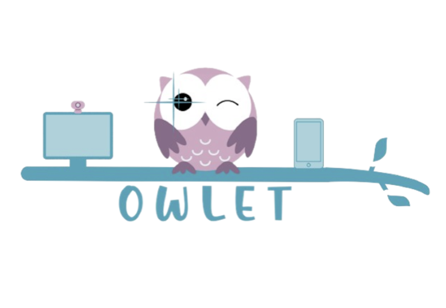

Product / UX Designer
Early identification can significantly improve developmental outcomes, yet current screening methods are slow, subjective, and inaccessible—especially for families without access to specialists.
At the same time, research shows that eye-tracking and AI can detect early neurological signals with high accuracy, but these tools remain confined to clinical settings.
Owlet bridges this gap by translating clinically validated methods into an accessible, scalable mobile experience—enabling earlier, more objective screening for all families.
Owlet is designed as an end-to-end screening experience—not a loose demo—where capture, interpretation, and handoff are intentional.
Step-by-step sessions that standardize context and reduce variability between at-home runs.
Computer-vision–based attention and gaze patterns to support developmental screening hypotheses.
Integrates biosignals alongside behavior to ground observations in measurable physiology.
Exports and summaries aimed at specialists—emphasizing clarity, provenance, and appropriate uncertainty.
Readable guidance for families after a session: what happened, what it may mean, and what to do next clinically.
I own the product and UX framing for Owlet—from problem definition through flows for users.
Depth of thinking matters more than a roadmap checklist—these tensions shaped the direction of the product.
Explicit tradeoffs recruiters and hiring managers look for—documented here the same way as on my shipped work.
Two journeys anchor the system—each labeled so reviewers can map narrative to UI.

Roadmap framed as product risk reduction—not a generic todo list.